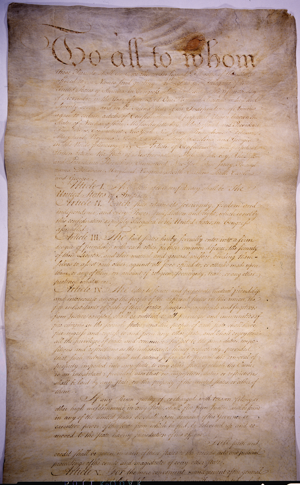

Directions: Read the passages from the Articles of Confederation and the background, then answer the questions.

Background. Congress adopted the Articles of Confederation in 1777, and Maryland's signature completed ratification in 1781. Article II reads: "Each state retains its sovereignty, freedom and independence, and every Power, Jurisdiction and right, which is not by this confederation expressly delegated to the United States, in Congress assembled." Article VIII provides that the common treasury "shall be supplied by the several states," and that "the taxes for paying that proportion shall be laid and levied by the authority and direction of the legislatures of the several states." Article XIII requires every alteration to be "confirmed by the legislatures of every state." In the same decade, this Congress passed the Land Ordinance of 1785 and the Northwest Ordinance of 1787, while a privately financed Massachusetts militia, not Congress, put down Shays's Rebellion. Source: Articles of Confederation, 1777, as carried in the audited source record (Road to the Civil War).
1. Under Article II, where does every power not expressly delegated to Congress remain, and what kind of union does that make the United States under the Articles?
2. Congress needs money for the army in 1784. Using Article VIII, state exactly how the money is supposed to reach the treasury, and name the point in that chain where the system could lawfully stop.
3. A delegate proposes fixing the Articles by adding a tax power. Using Article XIII, state what that fix requires, and explain why the requirement made replacement more likely than repair.
4. A classmate says the Confederation Congress accomplished nothing. Answer with two dated achievements from the background and the lesson, and state the one thing both achievements have in common about the kind of power they used.
1. Where undelegated power stays. It stays with the states. Each state retains its sovereignty, freedom, and independence, and every power, jurisdiction, and right not expressly delegated to the United States in Congress assembled. That makes the union a confederation, a firm league of friendship among sovereign states, rather than a single national government acting on citizens. (Blueprint 11)
2. The money chain, and where it stops. Congress sets each state's proportion of the common treasury, apportioned by the value of land. The taxes for paying that proportion are then laid and levied by the authority and direction of the state legislatures, which is the requisition system in the document's own words. The lawful stopping point is the state legislature itself: Article VIII assigns the taxing to the states, so a state that paid late, paid in part, or paid nothing broke no power Congress could enforce, as the small fraction actually sent by the middle of the 1780s shows. (Blueprint 11)
3. Repair under Article XIII. An alteration must first be agreed to in Congress and afterwards confirmed by the legislatures of every state, all thirteen. One state's refusal kills any amendment, as the era's failed impost proposals showed in practice. A defect written into the document, the missing tax power, therefore could not be removed by the document's own method once any state preferred the defect, which is why the road out ran to a convention at Philadelphia in 1787 rather than to an amended Articles. (Blueprint 11)
4. The nothing accomplished claim. Two dated achievements: the Land Ordinance of 1785, which set the survey of townships and sections, reserved a section of every township for schools, and turned the national domain into revenue; and the Northwest Ordinance of July 13, 1787, which set the path to statehood on equal footing, guaranteed liberties in the territory, and barred slavery north of the Ohio. Virginia's Statute for Religious Freedom of 1786 also earns credit as the decade's state level founding work. What the two ordinances share: both are acts of legislation for a domain Congress governed directly, not acts of compulsion against a state. The Confederation could legislate where no state stood in the way; it could not tax, enforce, or command where one did. (Blueprint 12)
Teacher note. This check is formative. Question 2 is the diagnostic for the lesson's central mechanism: students who describe requisition as a tax Congress collected should be sent back to Article VIII in Station 1 of the activity. Question 4 predicts success on the writing task, because it requires the achievement and the limit held in one answer.